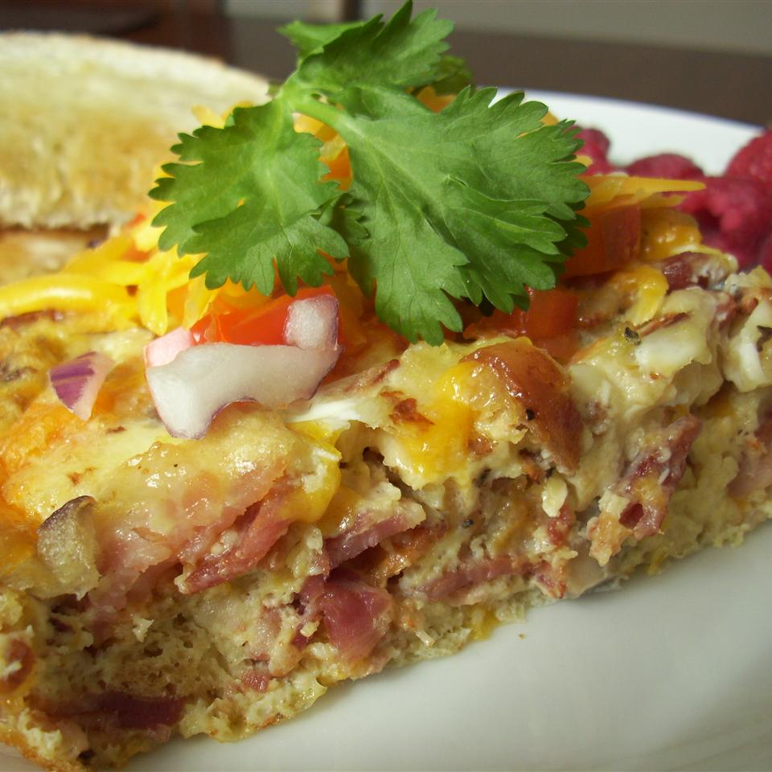

Easy Egg Casserole

Tasty egg casserole that husband approves! I frequently make this dish because it's so easy to make.
This recipe can be easily doubled or tripled, but you may have to cook it longer.
Ingredients
- 1 cup shredded Cheddar cheese
- 6 eggs, whisked
- 6 slices of bacon, diced
- 2 slices bread, cubed
- 1/3 red bell pepper, diced
- 2 green onions, chopped
- 3 tablespoons of milk
- 1/2 teaspoon minced garlic, or to taste (Optional)
- salt and ground black pepper to taste
Steps
- Preheat the oven to 350 degrees F (175 degrees C). Grease a 9x13-inch baking dish.
- Stir together cheese, eggs, bacon, bread, red bell pepper, green onion, milk, garlic, salt, and black pepper
in a bowl until well-combined; pour into the prepared baking dish.
- Bake in the preheated oven until eggs are set, 20 to 25 minutes.
Back to index